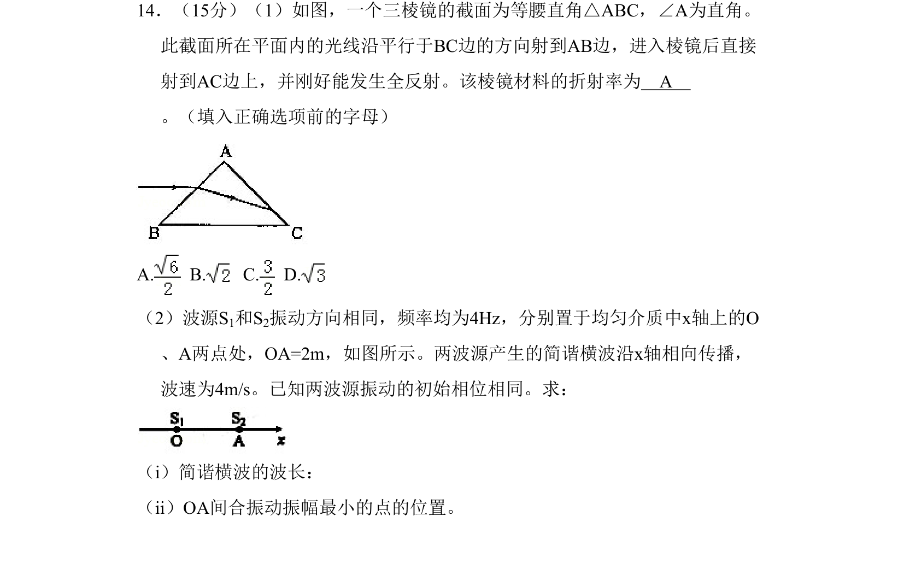
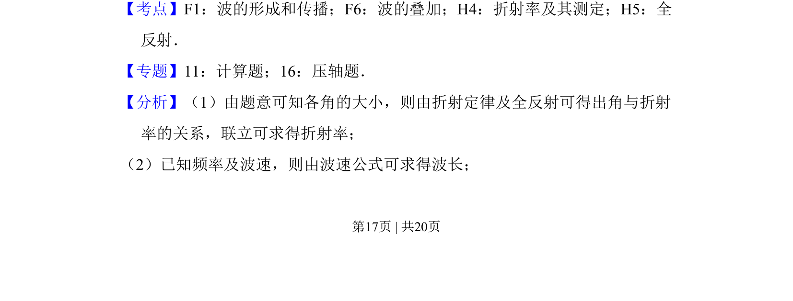
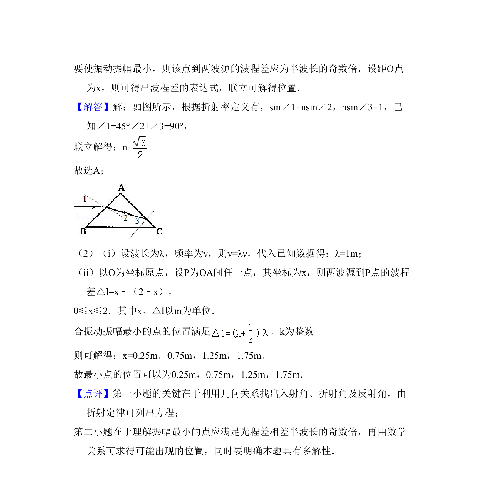

考点：折射率 全反射 波的形成和传播 波的叠加
折射率
全反射
波的形成和传播
波的叠加

通过三棱镜全反射求折射率，并结合波的叠加计算波长和振幅最小点位置


📄 原 PDF 第 17 页：素材/真题/吉林/2008-2024·（吉林）物理高考真题/2010年高考物理试卷（新课标Ⅰ）（解析卷）.pdf
素材/真题/吉林/2008-2024·（吉林）物理高考真题/2010年高考物理试卷（新课标Ⅰ）（解析卷）.pdf